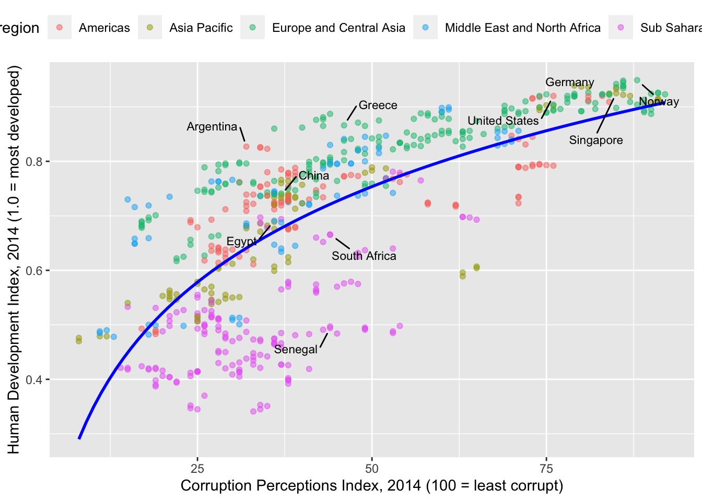

library(tidyverse)Warning: package 'dplyr' was built under R version 4.2.3── Attaching core tidyverse packages ──────────────────────── tidyverse 2.0.0 ──
✔ dplyr 1.1.4 ✔ readr 2.1.4
✔ forcats 1.0.0 ✔ stringr 1.5.0
✔ ggplot2 3.4.4 ✔ tibble 3.2.1
✔ lubridate 1.9.4 ✔ tidyr 1.3.0
✔ purrr 1.0.2
── Conflicts ────────────────────────────────────────── tidyverse_conflicts() ──
✖ dplyr::filter() masks stats::filter()
✖ dplyr::lag() masks stats::lag()
ℹ Use the conflicted package (<http://conflicted.r-lib.org/>) to force all conflicts to become errorslibrary(ggplot2)
library(ggrepel)Warning: package 'ggrepel' was built under R version 4.2.3library(readr)
hdi_corruption <- read_csv(
'https://bcdanl.github.io/data/hdi_corruption.csv')Rows: 704 Columns: 5
── Column specification ────────────────────────────────────────────────────────
Delimiter: ","
chr (2): country, region
dbl (3): year, cpi, hdi
ℹ Use `spec()` to retrieve the full column specification for this data.
ℹ Specify the column types or set `show_col_types = FALSE` to quiet this message.selected_countries <- c("Argentina", "China", "Egypt", "Senegal", "South Africa", "Greece", "United States", "Germany", "Singapore", "Norway")
hdi_corruption_labeled <- hdi_corruption %>%
filter(country %in% selected_countries) %>%
distinct(country, .keep_all = TRUE)
x_label <- "Corruption Perceptions Index, 2014 (100 = least corrupt)"
y_label <- "Human Development Index, 2014 (1.0 = most developed)"
ggplot(data = hdi_corruption,
mapping =
aes(x = cpi,
y = hdi,
color = region)) +
labs(x = x_label,
y = y_label) +
geom_point(alpha = .5) +
geom_smooth(method = "lm", formula = y ~ log(x), se = FALSE, color = "blue") +
geom_text_repel(data = hdi_corruption_labeled, aes(label = country), color = "black", size = 3, max.overlaps = Inf, segment.color = "black", box.padding = .75, point.padding = .75) +
theme(legend.position = "top")Warning: Removed 102 rows containing non-finite values (`stat_smooth()`).Warning: Removed 102 rows containing missing values (`geom_point()`).